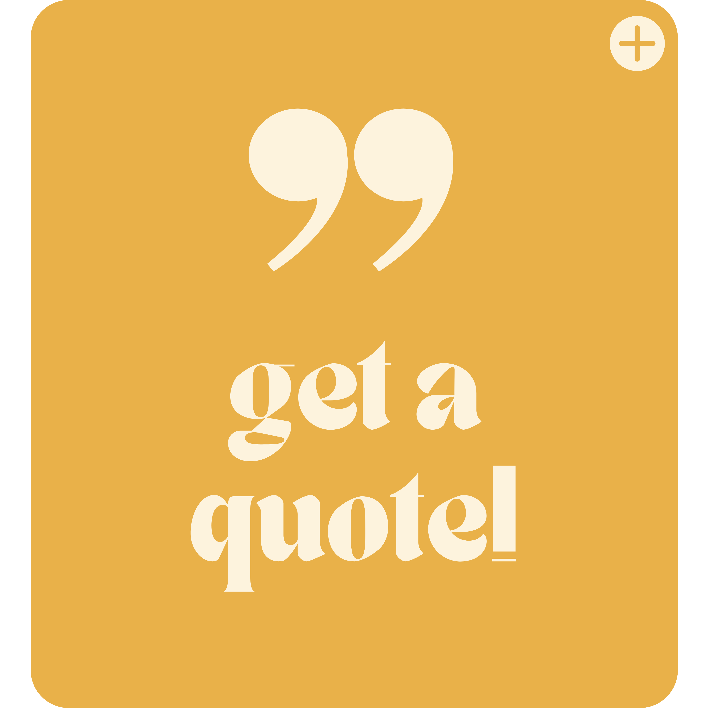
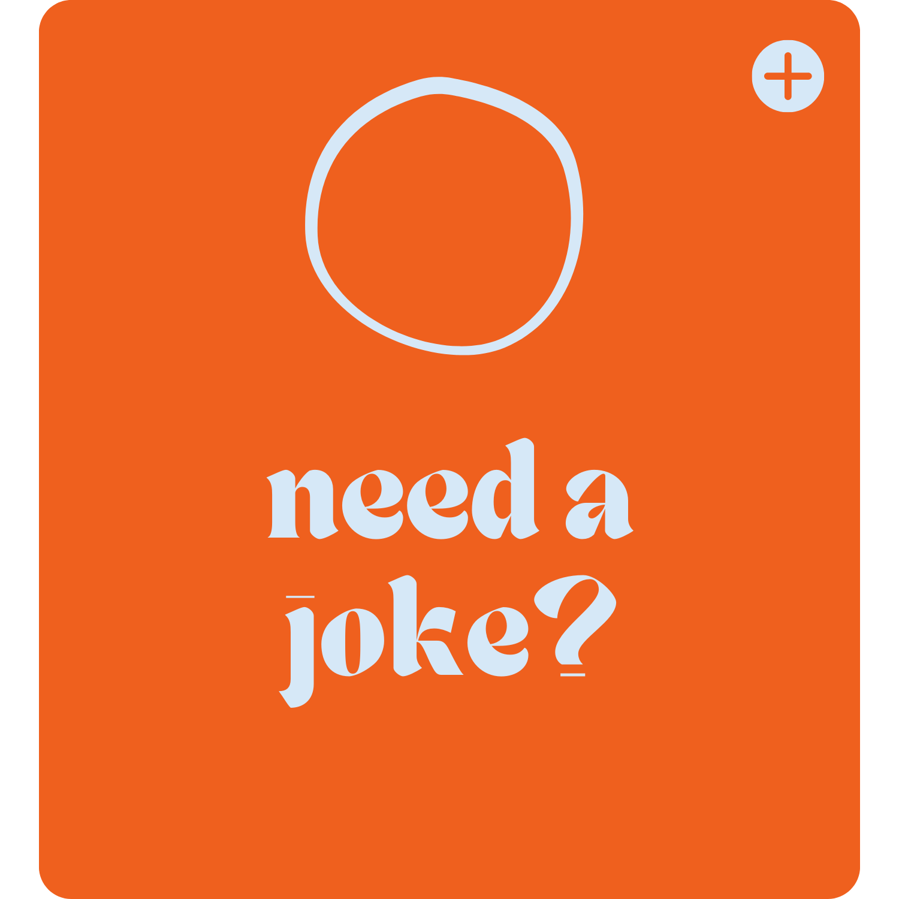

a website that turns
your frown upside down
browse uplifting activities below to brighten your day!
-



why? sometimes the universe wakes up on the wrong side of the bed 🥴
browse uplifting activities below to brighten your day!